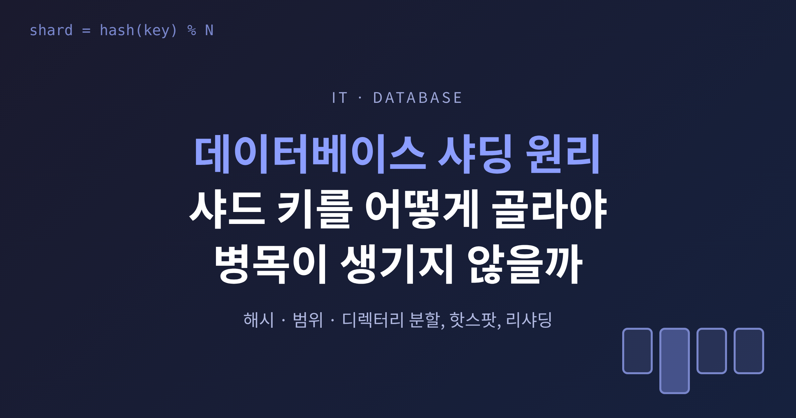
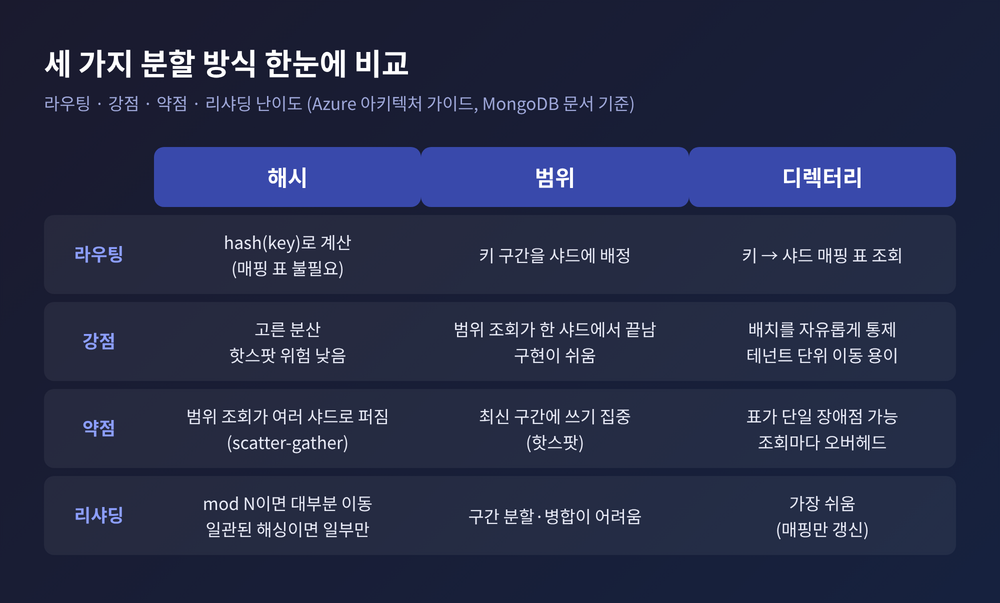
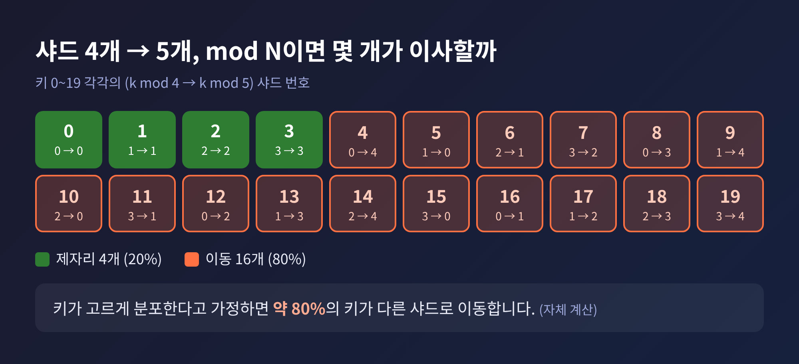
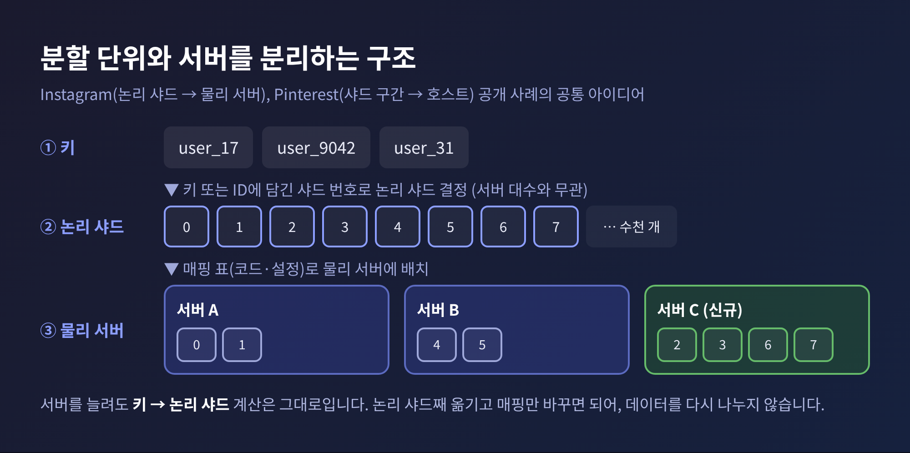
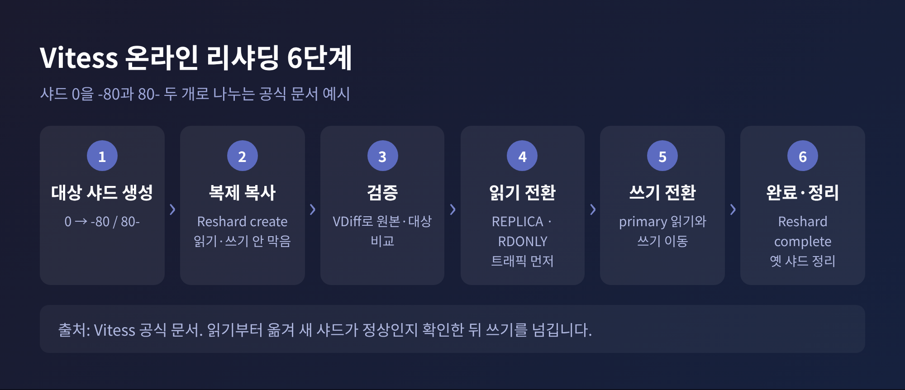
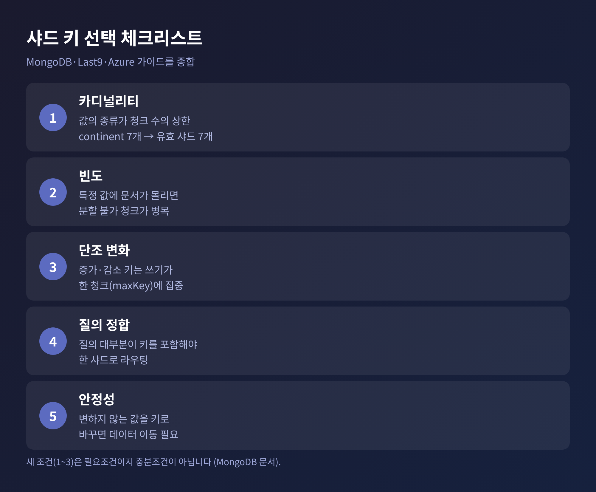

오늘은 데이터베이스 샤딩의 원리를 정리해 보려 합니다.
결론부터 말씀드리면 분할 방식은 해시, 범위, 디렉터리 세 가지로 나뉘고, 어느 방식이든 승부는 샤드 키 선택에서 갈립니다.
핫스팟과 리샤딩 비용, 일관된 해싱과의 관계, 공개된 사례까지 차례로 살펴보겠습니다.
샤딩은 하나의 데이터셋을 여러 서버에 나눠 담는 수평 분할입니다.
나뉜 조각을 샤드라 부르고, 어느 행이 어느 샤드에 있는지는 샤드 키 값을 보고 정합니다.
나눈다고 끝나지 않습니다. 쿼리에 샤드 키가 들어 있으면 해당 샤드 한 곳으로 보내면 됩니다.
없으면 모든 샤드에 질문을 뿌려야 합니다. MongoDB 문서는 이를 브로드캐스트, 흔히 scatter-gather라 부릅니다.
여러 샤드가 매 요청에 끼어들면 효율이 떨어지고, 샤드를 늘려도 성능이 선형으로 늘지 않는다고 설명합니다.
비용은 성능만이 아닙니다. 스키마 변경 하나가 한 대에서 30초 걸린다면 샤드 16개에서는 각각 30초씩, 그것도 전부 성공해야 합니다.
백업과 모니터링도 샤드 수만큼 늘어납니다. 그래서 샤딩은 한계에 부딪힌 뒤에 꺼내는 카드라고 저는 생각합니다.
해시 분할은 샤드 키를 해시한 값으로 샤드를 정합니다. 가장 단순한 형태는 hash(user_id) % 샤드 수입니다.
데이터가 고르게 퍼지고, 별도의 매핑 표가 필요 없습니다. 대신 인접한 키가 서로 다른 샤드로 흩어집니다.
그래서 범위 조회는 여러 샤드를 뒤져야 합니다. MongoDB 문서의 표현을 빌리면, 고른 분산을 얻는 대가로 타깃 연산이 줄고 브로드캐스트 연산이 늘어납니다. 동등 조건 조회는 여전히 한 샤드로 갑니다.
범위 분할은 연속된 키 구간을 샤드에 배정합니다. 사용자 1번부터 100만 번까지는 샤드 A, 그다음 100만 명은 샤드 B 하는 식입니다.
관련 데이터가 한곳에 모여 범위 조회가 한 샤드에서 끝납니다. Azure 아키텍처 가이드가 든 예처럼 한 달 치 주문을 날짜순으로 한 샤드에 두는 구성이 대표적입니다.
약점은 부하가 고르지 않다는 점입니다. 가장 최근에 가입한 이용자가 가장 활발하다면 활동이 소수 샤드에 몰립니다.
디렉터리 분할은 키 값에서 샤드로 가는 길을 표로 관리합니다. 룩업 방식이라고도 합니다.
배치를 마음대로 통제할 수 있어서 테넌트 하나를 통째로 다른 샤드로 옮기기도 쉽습니다. 매핑을 바꿔도 애플리케이션 코드는 그대로입니다.
치러야 할 값은 두 가지입니다. 표 자체가 단일 장애점이 될 수 있고, 매 조회마다 표를 거치는 오버헤드가 붙습니다. 그래서 표는 캐시하기 쉽고 복제하기 쉬워야 한다고 Azure 가이드는 짚습니다.

샤딩의 목표는 부하를 고르게 나누는 것입니다. 한 샤드만 뜨거워지면 서버를 아무리 늘려도 소용이 없습니다.
MongoDB 문서는 핫스팟의 원인을 세 가지로 정리합니다.
첫째, 단조 증가하는 키입니다. 값이 계속 커지면 새 삽입은 항상 상한이 maxKey인 청크로 들어갑니다. 쓰기가 한 샤드에 갇힙니다.
청크가 쪼개져 다른 샤드로 옮겨져도 쓰기가 몰리는 구조 자체는 남습니다.
둘째, 특정 값에 문서가 몰리는 경우입니다. 한 값에 문서가 쌓이면 그 청크는 더 쪼갤 수 없는 분할 불가 청크가 되어 병목이 됩니다.
셋째, 값의 종류가 적은 경우입니다. 값의 개수가 청크 수의 상한을 정하기 때문입니다.
여기서 해시 분할의 효과와 한계를 구분해 두면 좋겠습니다.
해시는 이웃한 키가 한 샤드에 쏠리는 문제를 풀어 줍니다. MongoDB도 ObjectId나 타임스탬프처럼 단조 증가하는 필드에 해시 키가 이상적이라고 안내합니다.
다만 같은 키 값 자체가 많은 경우는 해시로도 같은 곳에 갑니다. 이 부분은 두 문서를 겹쳐 읽은 제 해석입니다만, 키 값의 분포를 따로 점검해야 하는 이유입니다.
예전엔 서버 대수에 맞춰 % N으로 나누는 것이 정석처럼 보였습니다. 지금은 N이 바뀌는 순간의 비용이 더 크게 보입니다.
Azure 가이드는 hash(key) mod N에서 샤드를 더하거나 빼면 대부분의 키가 다른 샤드로 재배정되어 대규모 이동이 일어난다고 설명합니다.
직접 계산해 보면 이렇습니다. 샤드를 4개에서 5개로 늘릴 때 k mod 4와 k mod 5가 같은 키는 20개 중 4개뿐입니다. 키가 고르게 분포한다고 가정하면 약 80%가 이사를 가야 합니다. (이 수치는 출처 문서가 아니라 제가 산술로 확인한 값입니다.)

범위 분할도 쉽지는 않습니다. 구간을 쪼개고 합쳐야 하며, 환경에 따라 저장소 일부를 오프라인으로 두기도 한다고 Azure 가이드는 적고 있습니다.
직접 만든 온라인 리샤딩에는 이중 쓰기 기간과 이동, 신중한 컷오버가 필요합니다. Last9는 이를 며칠이 아니라 몇 주의 작업으로 추정합니다. 측정값이 아니라 필자의 추정이라는 점은 감안하셔야 합니다.
그래서 널리 쓰이는 해법이 분할 단위와 배치를 분리하는 것입니다.
Instagram은 수천 개의 논리 샤드를 훨씬 적은 수의 물리 샤드에 코드로 매핑했습니다. 논리 샤드는 PostgreSQL 스키마이고, 물리 샤드는 PostgreSQL 서버입니다.
논리 샤드를 서버 사이에서 옮길 때는 데이터를 다시 버킷에 나눌 필요가 없습니다. 서버 몇 대로 시작해 필요할 때 늘릴 수 있습니다.
Pinterest도 비슷합니다. 샤드 ID 필드는 64k까지 담을 수 있지만 처음에는 4,096개만 만들었고, 한번 샤드에 들어간 데이터는 그 밖으로 옮기지 않았습니다. 용량이 필요하면 새 서버 쌍을 만들어 샤드 구간 하나를 통째로 넘겼습니다. 예를 들어 샤드 0~511을 맡던 호스트가 0~255만 남기고 256~511을 새 호스트에 넘기는 식입니다.

운영 중인 시스템에서 구조 자체를 바꿔야 할 때는 도구가 필요합니다.
Vitess는 샤드 하나를 -80과 80- 두 개로 쪼개는 예시를 보여 줍니다. 데이터를 복제로 복사하고, 원본과 대상을 비교해 검증한 뒤, 읽기 트래픽부터 옮기고 마지막에 쓰기를 넘깁니다. 이 과정에서 읽기와 쓰기를 막지 않는다고 문서는 밝힙니다.
MongoDB의 reshardCollection은 쓰기 차단을 최대 2초로 두지만, 최소 5분이 걸리고 샤드당 필요한 저장 공간이 데이터와 인덱스 합의 두 배를 샤드 수로 나눈 만큼입니다. 문서의 예로 2TB 데이터와 400GB 인덱스를 샤드 4개에 올리면 샤드당 1.2TB입니다. I/O는 50% 미만, CPU는 80% 미만 여유가 있어야 하는데, 이 조건은 데이터베이스가 강제하지 않습니다.

일관된 해싱은 이미 다룬 적이 있으니 여기서는 위치만 짚겠습니다.
Dynamo 논문은 해시 값 범위를 원형 링으로 보고, 키를 해시한 위치에서 시계 방향으로 처음 만나는 노드가 담당하게 합니다. 노드가 들어오고 나가도 바로 이웃만 영향을 받습니다.
앞서 본 mod N의 약점을 푸는 방법입니다. 해시 분할의 리샤딩 비용을 줄이는 기법이라고 보시면 됩니다.
다만 만능은 아닙니다. 논문은 노드 위치를 무작위로 잡으면 데이터와 부하가 고르지 않게 나뉘고, 노드 성능 차이도 반영하지 못한다고 지적합니다. 그래서 노드 하나를 링의 여러 지점에 배정하는 가상 노드를 씁니다.
이 아이디어는 앞의 사례와 맞닿아 있습니다. 가상 노드, 논리 샤드, 가상 파티션은 이름만 다를 뿐 분할 단위를 서버와 분리한다는 점이 같습니다. 이는 여러 소스를 종합한 해석입니다.
Dynamo도 처음부터 이 방식이 완성형은 아니었습니다. 초기 전략은 부트스트랩이 느리고 아카이브가 어려웠습니다. 분할 방식과 배치 방식이 얽혀 있었기 때문입니다. 동일한 크기의 파티션을 두고 노드에 배분하는 후기 전략에서 부하 균형이 가장 좋았고, 노드당 메타데이터가 약 세 자릿수 줄었다고 논문은 보고합니다.
샤드 키는 한번 정하면 바꾸기가 어렵습니다. Azure 가이드는 샤드 키를 바꾸려면 일반적으로 모든 데이터를 새 레이아웃으로 옮겨야 한다고 적고, Last9는 잘못된 키가 리샤딩 없이는 고칠 수 없는 문제를 만든다고 경고합니다.
최근에는 MongoDB 5.0부터 reshardCollection으로 키를 바꿀 수 있게 되었지만, 앞서 본 자원 요건과 쓰기 차단을 생각하면 처음에 잘 고르는 편이 낫습니다.
MongoDB가 제시한 기준은 세 가지입니다.
세 조건은 필요조건이지 충분조건이 아닙니다. 문서도 높은 카디널리티가 그 자체로 균등 분산을 보장하지 않는다고 단서를 답니다.
여기에 Last9가 짚은 네 번째 관점, 질의 정합이 더해집니다. 질의의 90%가 user_id로 들어온다면 user_id가 강한 후보입니다. 반대로 사용자의 80%가 한 나라에 몰려 있다면 country는 나쁜 키입니다.
용도별 처방도 있습니다. Citus는 멀티테넌트 서비스라면 tenant_id, 실시간 서비스라면 값이 다양한 컬럼을 권하고, 시계열이라도 타임스탬프를 분산 컬럼으로 삼지 말라고 합니다. 시간은 테이블 파티셔닝으로 다루라는 것입니다. 같은 분산 컬럼을 공유하는 테이블끼리는 같은 값의 행이 같은 머신에 모이므로 조인이 한 노드에서 끝납니다.
Azure 가이드는 변하지 않는 값을 쓰고 자동 증가 ID는 피하라고 덧붙입니다. 자동 증가 값은 샤드 사이에서 조율되지 않아 중복이 생길 수 있기 때문입니다.

Instagram의 ID는 64비트입니다. 시간 41비트, 논리 샤드 ID 13비트, 시퀀스 10비트로 이루어져 있습니다. 시간이 앞에 있어 ID만으로 시간순 정렬이 되고, ID 안에 샤드 번호가 들어 있어 레코드에서 곧바로 샤드를 알 수 있습니다. 13비트는 계산상 8,192개의 논리 샤드를 표현할 수 있는 크기입니다. 글에 등장하는 2,000은 예시 숫자입니다.
Pinterest의 ID는 샤드 16비트, 타입 10비트, 로컬 ID 36비트입니다. ID만 보고 데이터가 있는 샤드를 알 수 있다는 점은 두 회사가 같습니다. Instagram은 ZooKeeper 같은 별도 서비스 없이 PostgreSQL 스키마와 auto-increment, 함수 하나로 구현했다고 밝힙니다. Pinterest가 해시 대신 이 방식을 택한 이유는 글에서 확인되지 않아, 여기서는 추측하지 않겠습니다.
한계도 분명히 해 두겠습니다. 이 사례들은 2010년대 중반 전후의 글이라 지금의 도구와는 다릅니다. 현행 문서 기준으로 Vitess와 MongoDB는 온라인으로 진행하는 리샤딩 절차를 제공합니다. 그래도 분할 단위를 서버와 분리하고, 키를 신중히 고른다는 원칙은 달라지지 않았습니다.
정리하면 이렇습니다.
해시는 고르게 나누는 대신 범위 조회를 포기하고, 범위는 범위 조회를 얻는 대신 핫스팟을 떠안으며, 디렉터리는 자유를 얻는 대신 표를 관리해야 합니다.
어느 쪽을 고르든 비용은 나중에 리샤딩으로 돌아옵니다.
"샤드 키는 가장 먼저 정하지만, 가장 나중에 바꾸게 되는 결정입니다."
샤딩을 도입할 때 무엇부터 보겠냐고 물으신다면, 저는 쿼리 패턴부터 보겠다고 답하겠습니다. 샤드 키는 그 안에서 저절로 좁혀지기 때문입니다.